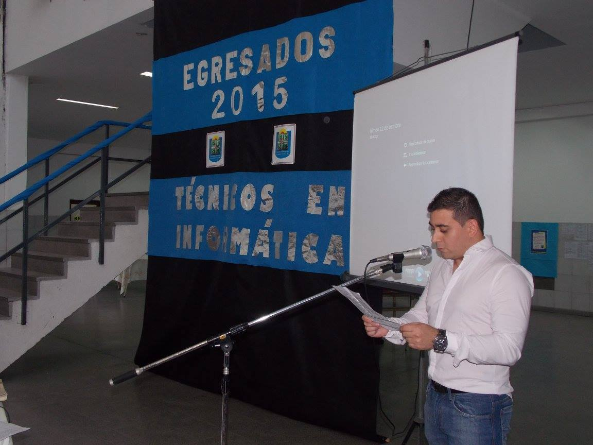

Te proponemos que estudies para:
Secundaria Basica de 3 años y Secundaria Superior Técnica de 4 años
Con orientación en:
-Tecnico en informática Personal y Profesional
-Tecnico en Programación
Turnos mañana, tarde y vespertino
Tecnicatura en informática profesional y personal:
El técnico en informática profesional y personal está capacitado para asistir al usuario de productos y servicios informáticos brindándole servicios de instalación, capacitación, sistematización, mantenimiento primario, resolución de problemas derivados de la operatoria, y apoyo a la contratación de productos o servicios informáticos, actuar de nexo entre el especialista o experto en el tema. Producto o servicio y el usuario final
Tecnicatura en Programación:
El técnico en Programación estará capacitado para realizar programas o componentes de sistemas de computación. Interpretar especificaciones de diseño, documentar los productos realizados, verificar los componentes programados, buscar causas de malfuncionamiento y corregir los programas o adaptarlos a cambios futuros.